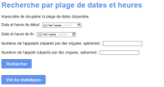
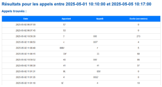
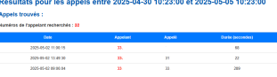
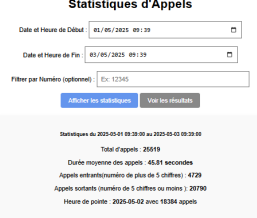

Supervision CDR
Mise en place d'un système de traçabilité pour les communications téléphoniques du GHAT. Analyse de flux et résolution d'incidents via l'exploitation des logs d'appels.
Filtrage Temporel Avancé
Pour retrouver un appel spécifique dans une base de données contenant des millions d'entrées, la précision du Time Range est cruciale. Cette interface permet de restreindre l'analyse à une fenêtre précise, essentielle lors de plaintes pour appels malveillants ou d'erreurs d'acheminement.
- Sélection par plages relatives (1h, 24h)
- Sélection par dates absolues précises à la seconde

Sélecteur de plage temporelle de recherche.
Extraction des données consolidées
Une fois la période définie, Graylog extrait les données brutes des serveurs de téléphonie. J'ai configuré l'affichage pour présenter les champs CDR essentiels (Numéro appelant, appelé, durée, état de l'appel).


Requête Lucene sur un champ spécifique : calling_number.
Traçabilité par Numéro
L'investigation technique permet de filtrer les logs par numéro de téléphone (extension). Cela est particulièrement utile pour vérifier si un poste interne a bien reçu un appel externe ou pour identifier la provenance d'un flux massif d'appels saturant les lignes.
EXEMPLE D'USAGE :
"Vérifier si le poste 4532 a bien tenté d'appeler l'extérieur entre 10h et 10h15."
Tableaux de Bord & Graphiques
Transformation des données brutes en intelligence visuelle.
Au-delà de la recherche textuelle, j'ai mis en place des visualisations graphiques. Cela permet de surveiller la charge globale de la téléphonie du GHAT, d'identifier les pics d'activité horaire et de détecter d'éventuelles anomalies de réseau.

Histogrammes de fréquence
Répartition par destinations
Détection des seuils critiques